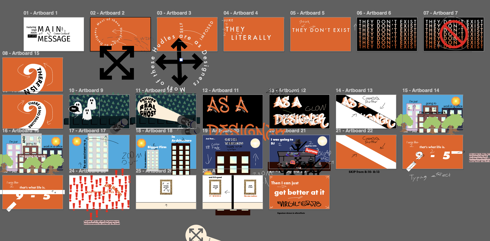
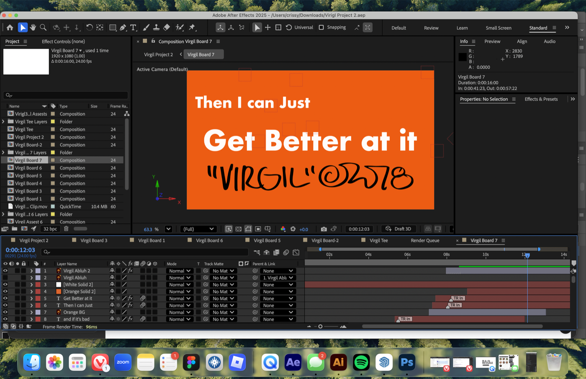
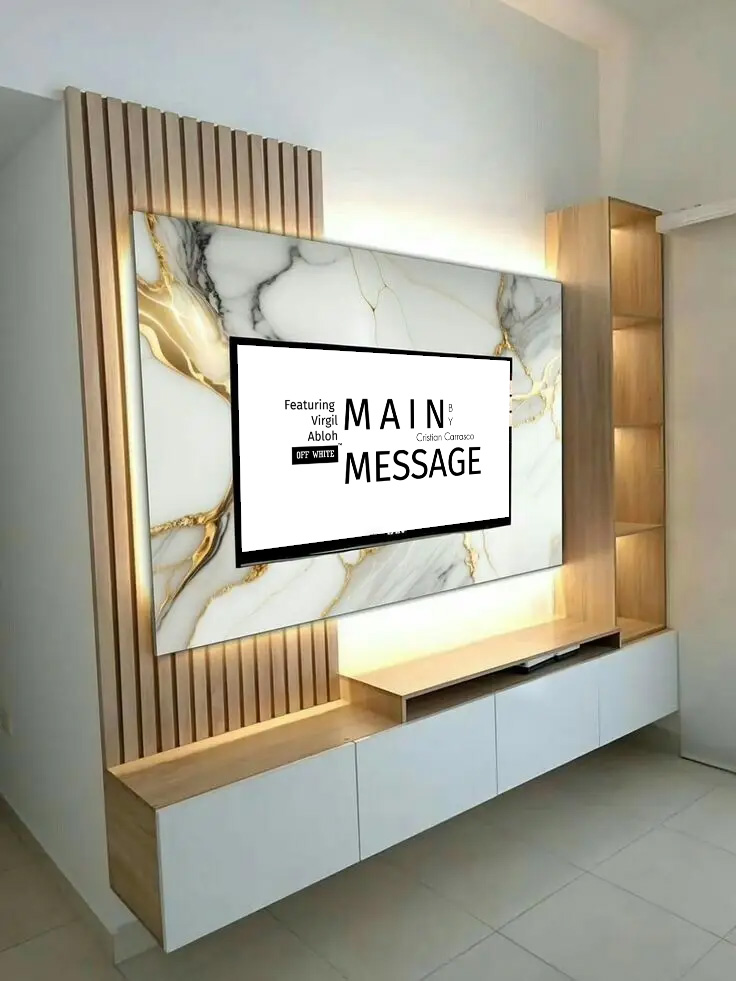
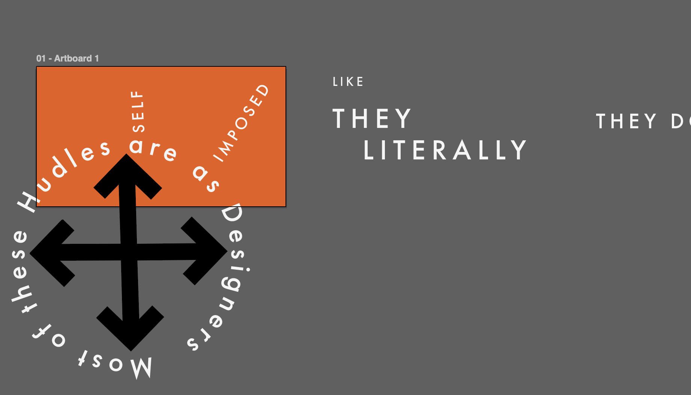
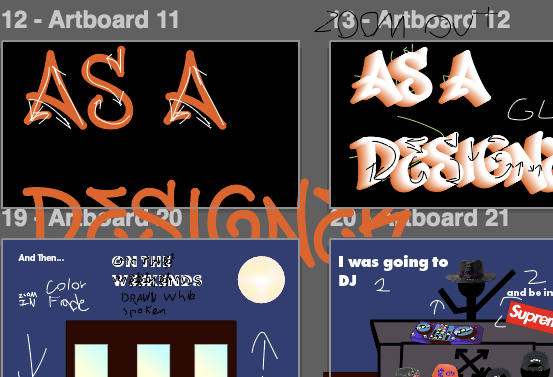

Animated Speech
Virgil Abloh "Harvard Design Lecture" Animated
Main Message
The Speech Virgil Abloh gives is a powerful design insight into being a designer.
Animation Assets






About the Speech & Project
The Speech
This animated project brings to light a power message about perseverance and creative thinking. Taking place at Harvards University Graduate School of Design at a core Studio Public Lecture. Responding to a question about what his Aha! Moment as a designer was?
The Project
The Animated Video involved multiple sketched storyboards, typographic animations, and motion design to create a smooth animation! The project was created using assests created in Adobe Illustrator which was then used in AfterEffects Custom animations scripts were used in video animation. Design themes and concepts were inspired by Virgil Abloh's Off-White Brand. Adjusted some audio and instances in speech of original video to create a fast-paced animation. The Final Video came out to about a minute long, using multiple animation techniques and utilizing various scenes, the animation represents a moment designers and creators come to see!
Technical Specifications
- Duration: 58 Seconds
- Resolution: 1920x1080, 24fps
- Software: After Effects, Cinema 4D, Premiere Pro, Adobe Illustrator
- Style: Kinetic Typography, Motion Graphics
- Audio: Original speech recording with Virgil Abloh with sound design
Source Lecture
Watch the original lecture segment that inspired this animation.